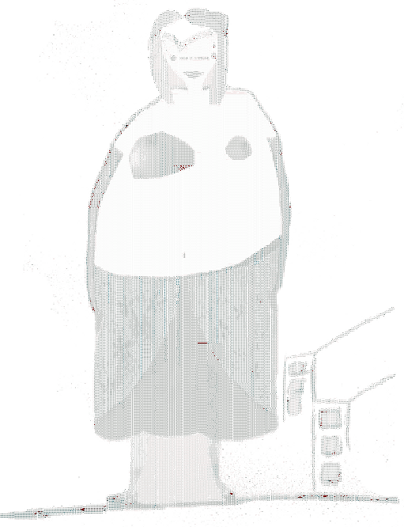
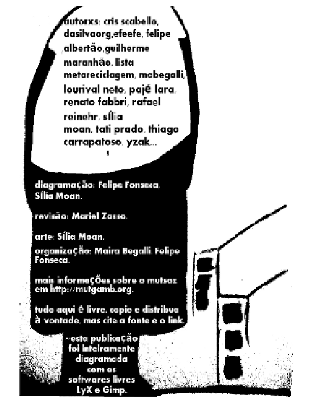

Next:
Sintonizando a estação...

http://mutgamb.orgmutgamb.org
mutsaz inverno
pozimi
setembro 2010
versão ebook

Sintonizando a estação...
Chamada
Índice
Significando
Soneto Dadaísta (Pozimi)
In...
Versus em forma de prosa
Entrevista com Fernando Rabelo
Metareciclando as cidades digitais
MetaReciclagem (de novo)
Cidades Digitais
MetaReciclando cidades digitais
Experimentação
Uba
Tricromia
Uma reflexão com o sertão: tecnologias, água e invernos
O Fenômeno Shanzhai
Liberdade na rede, transparência e Moore
Como realizar inclusão utilizando pc's antigos com sistema GNU/Linux
Carta de Indicações aos Participantes do Edital Pontos de Mídia Livre 2010
Contra a Cultura, uma crítica ao producaocultural.org.br
About this document ...
Felipe Fonseca 2010-09-24